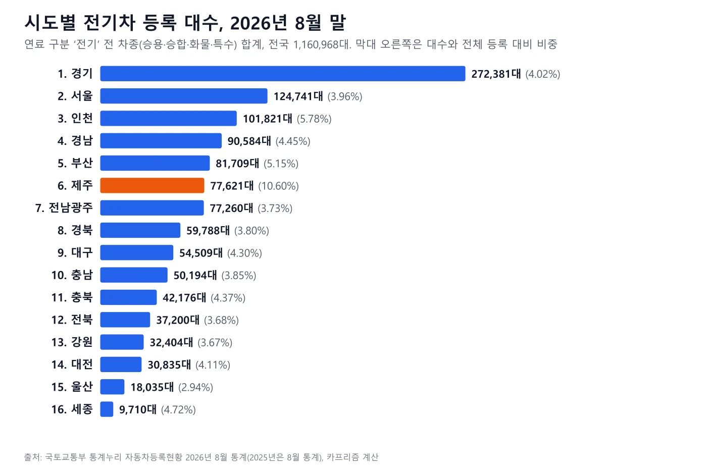
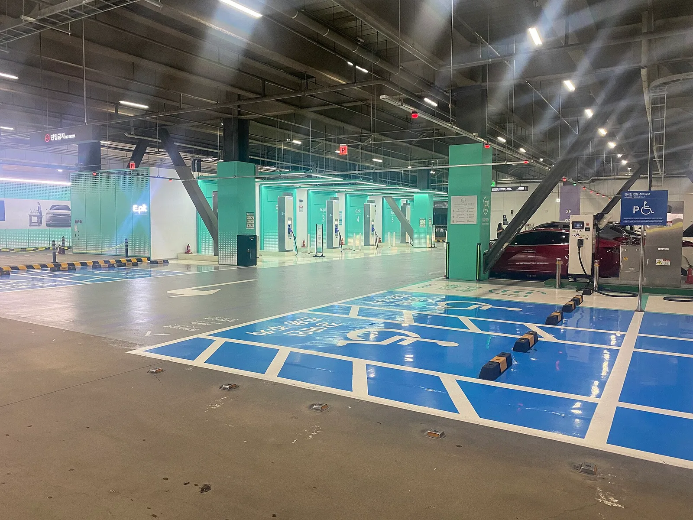
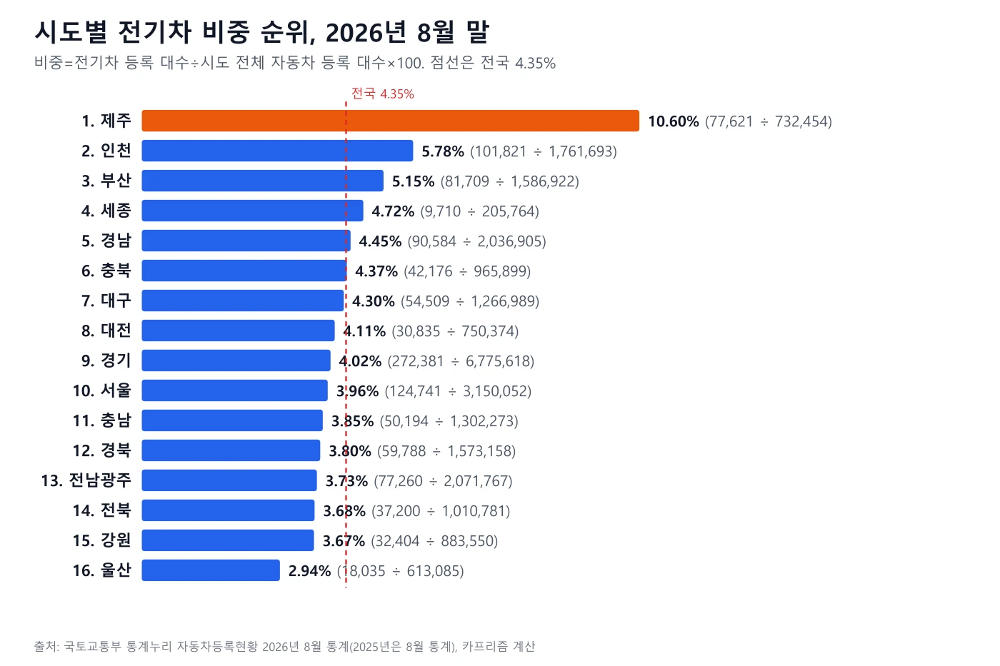
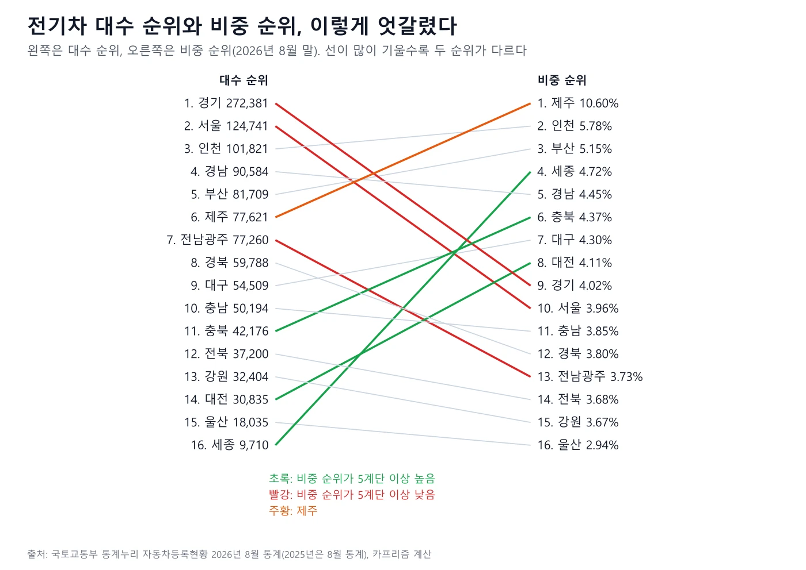
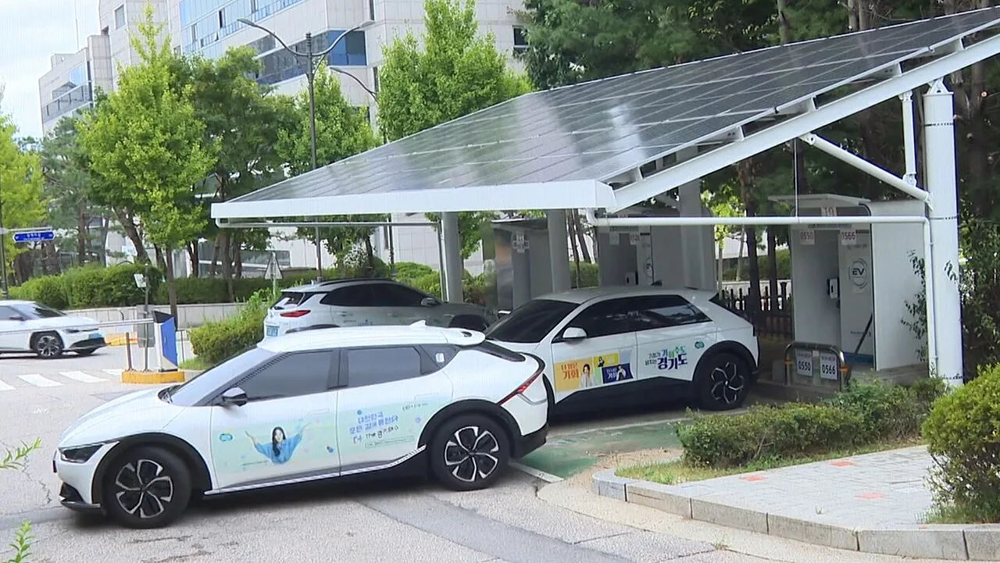
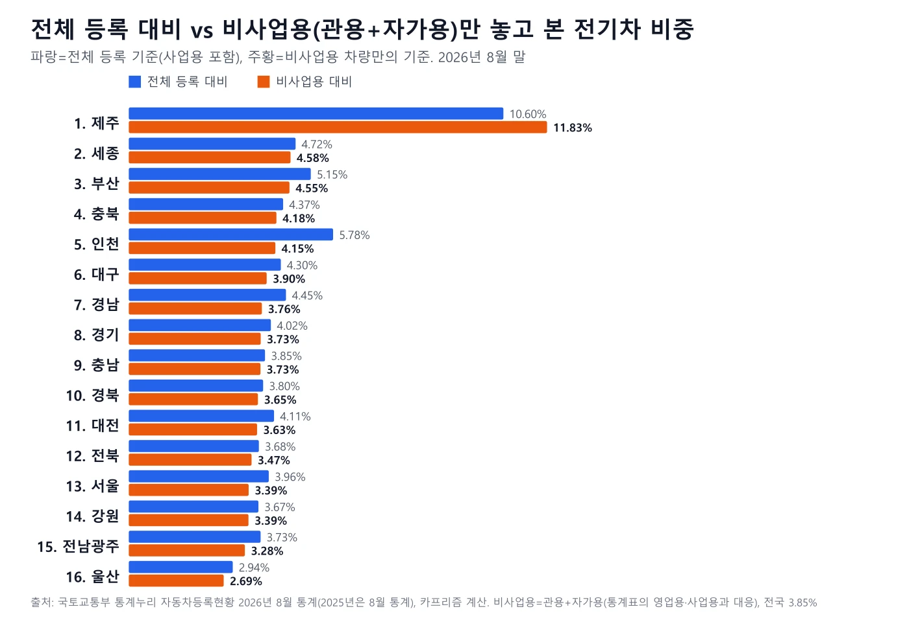
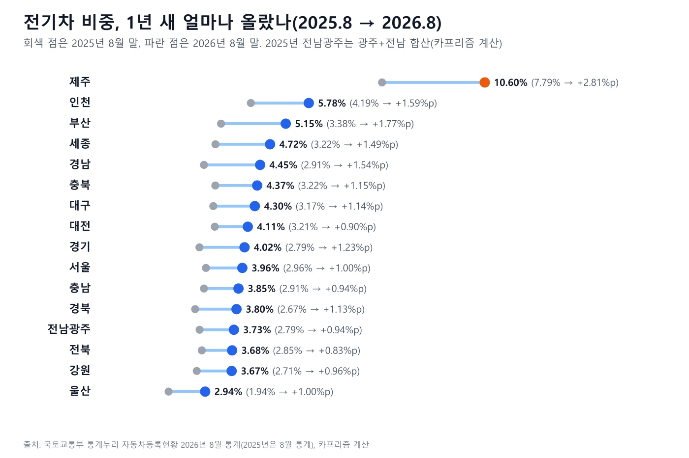
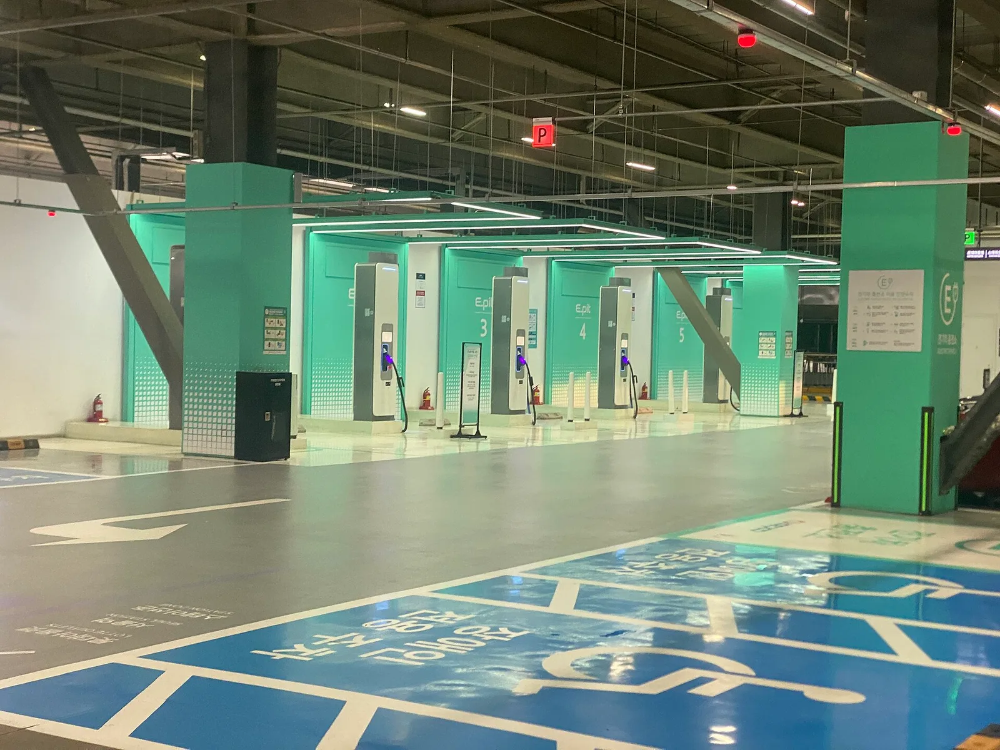

▲ 제주 서귀포의 전기차 충전소(2021년 11월 촬영). 한 곳의 풍경일 뿐 제주 전체나 통계 수치를 대표하지는 않는다 ⓒ Sharon Hahn Darlin, Wikimedia Commons (CC BY 2.0)
어느 지역에 전기차가 몰렸을까. 국토교통부 통계누리의 '자동차등록현황보고' 2026년 8월 통계 파일(조회 2026년 10월 10일)을 직접 열어 시도별 전기차 등록 대수와 전체 자동차 등록 대수를 나란히 놓고 비중을 직접 계산했다. 연료 구분이 '전기'인 승용·승합·화물·특수 전 차종은 전국 1,160,968대, 전체 등록 자동차는 26,687,284대로 전국 비중은 4.35%다. 대수 1위는 경기(272,381대)지만 비중 1위는 제주(10.60%)이고, 경기의 비중 순위는 9위다. 수치는 모두 이 파일의 8월 통계(비교용으로 2025년 8월 파일)에 한정되며 수소전기차·하이브리드·플러그인 하이브리드는 들어 있지 않다.
1. 어떤 통계를 열었나 — 범위와 한계부터
▲ 제주 서귀포의 전기차 충전소(2021년 11월 촬영). 한 곳의 풍경일 뿐 제주 전체나 통계 수치를 대표하지는 않는다 ⓒ Sharon Hahn Darlin, Wikimedia Commons (CC BY 2.0)
국토교통부 통계누리 '자동차등록현황보고' 페이지는 월별 '자동차 등록자료 통계.xlsx' 파일을 올려 둔다. 이 글은 그중 2026년 8월 파일(시트 '01.통계표'와 '10.연료별_등록현황')을 내려받아 계산했고, 전년 같은 달 비교를 위해 2025년 8월 파일을, 기존 기사 수치 확인을 위해 2026년 5월 파일을 함께 열었다.
| 항목 | 이 글에서 쓴 기준 |
|---|---|
| 자료 | 국토교통부 통계누리 · 자동차등록현황보고 · 2026년 08월 자동차 등록자료 통계.xlsx(파일 표지 조회년월 2026.08) |
| 분자 | 시트 10 연료별 등록현황의 연료 '전기' 소계(승용+승합+화물+특수, 비사업용+사업용). 수소전기는 별도 연료 구분이라 넣지 않았다 |
| 분모 | 시트 1 통계표의 시도별 총계(승용·승합·화물·특수, 관용+자가용+영업용). 이륜자동차는 별도 파일이라 들어 있지 않다 |
| 검산 | 16개 시도 전기차 합 1,160,968대와 전체 등록 합 26,687,284대가 파일의 전국 합계와 정확히 같다 |
| 비중 | 전기차 등록 대수 ÷ 해당 시도 전체 자동차 등록 대수 × 100. 예) 제주 77,621 ÷ 732,454 × 100 = 10.60% |
| 시도 표기 | 8월 파일은 광주와 전남을 '전남광주' 한 줄로 합쳐 표기한다(5월 파일은 광주·전남이 따로 있었다). 이 글도 파일 표기를 따르고, 2025년 8월 비교에서는 광주+전남을 카프리즘이 합산했다. 전남광주통합특별시는 정부가 2026년 7월 1일 출범을 목표로 한다고 밝힌 통합 행정구역이다(정책브리핑 2026.3.6). 5월 파일(광주·전남 분리)과 8월 파일(합산) 표기 차이는 이 출범과 맞물린 것으로 보이나, 통계 쪽의 소급 적용 여부는 확인하지 못했다. 그래서 2025년 8월 값은 광주+전남을 합친 근사 비교다 |
| 기준일 | 파일 안에는 '8월 말' 문구가 없고 조회년월 2026.08만 표시된다. 다만 같은 통계의 2025년 8월 파일 전기차 822,081대를 국토교통부 통계로 '2025년 8월 말 기준'이라 보도한 SBS Biz(2025.10.9)와 수치가 일치해, 이 월별 파일은 월말 등록 기준으로 읽었다. 2026년 8월 파일 자체의 '월말' 문구는 확인하지 못했다 |
| 사업용 구분 | 시트 1은 관용·자가용·영업용, 시트 10은 비사업용·사업용으로 나뉜다. 전국 합계가 비사업용 24,595,098대(=관용+자가용), 사업용 2,092,186대(=영업용)로 맞아떨어져 같은 구분으로 보고 대응시켰다 |
'등록' 통계라는 점도 짚어 둔다. 이 표는 자동차를 어느 시도에 등록했는지를 센 것이어서, 그 차가 주로 어디서 달리는지는 알려 주지 않는다. 언론 보도나 검색 요약의 시도별 수치와 기준이 다를 수 있어, 이 글은 보도를 옮기지 않고 공식 파일의 숫자만 썼다. 기존 기사가 5월 기준으로 인용한 제주 70,967대(9.70%)는 5월 파일에서 같은 값이 확인됐다(제주 70,967 ÷ 731,246).
통계누리 자동차등록현황보고 바로가기2. 대수로 보면 — 경기 27만 대, 상위 5곳이 58%

▲ 2026년 8월 말 시도별 전기차 등록 대수. 제주만 주황색으로 표시했다
전기차 등록 대수는 경기 272,381대가 압도적 1위다. 전국 1,160,968대의 23.5%에 해당한다. 서울 124,741대, 인천 101,821대, 경남 90,584대, 부산 81,709대가 뒤를 잇고, 이 다섯 곳의 합은 671,236대로 전국의 57.8%다. 가장 적은 곳은 세종 9,710대, 울산 18,035대, 대전 30,835대 순이다.
다만 대수 순위는 자동차 자체가 많은 지역이 유리하다. 경기는 전체 등록 대수가 6,775,618대로 전국 1위이고, 세종은 205,764대로 가장 적다. 수도권 세 곳(경기·서울·인천)의 전기차 점유율 43.0%는 이들의 전체 자동차 점유율 43.8%보다 오히려 0.8%p 낮다. '전기차가 수도권에 몰렸다'는 말은 대수로는 맞지만, 자동차 전체가 이미 수도권에 몰려 있는 만큼을 감안하면 이 표만으로 수도권 쏠림이 더 심하다고 읽을 수는 없다.

▲ 서울역 전기차 충전기 구역(파일명 기준, 2024년 8월 촬영). 서울은 대수 2위, 비중 10위다 ⓒ Immanuelle, Wikimedia Commons (CC BY 4.0)
3. 비중으로 보면 — 제주 10.60%, 자동차 10대 중 1대 넘게 전기차

▲ 시도별 전기차 비중 순위. 점선은 전국 비중 4.35%
비중으로 줄 세우면 순서가 바뀐다. 아래 표는 비중 순이며, 마지막 열은 대수 순위다.
| 비중 순위 | 시도 | 전기차 등록(대) | 전체 등록(대) | 비중(%) | 대수 순위 |
|---|---|---|---|---|---|
| 1 | 제주 | 77,621 | 732,454 | 10.60 | 6 |
| 2 | 인천 | 101,821 | 1,761,693 | 5.78 | 3 |
| 3 | 부산 | 81,709 | 1,586,922 | 5.15 | 5 |
| 4 | 세종 | 9,710 | 205,764 | 4.72 | 16 |
| 5 | 경남 | 90,584 | 2,036,905 | 4.45 | 4 |
| 6 | 충북 | 42,176 | 965,899 | 4.37 | 11 |
| 7 | 대구 | 54,509 | 1,266,989 | 4.30 | 9 |
| 8 | 대전 | 30,835 | 750,374 | 4.11 | 14 |
| 9 | 경기 | 272,381 | 6,775,618 | 4.02 | 1 |
| 10 | 서울 | 124,741 | 3,150,052 | 3.96 | 2 |
| 11 | 충남 | 50,194 | 1,302,273 | 3.85 | 10 |
| 12 | 경북 | 59,788 | 1,573,158 | 3.80 | 8 |
| 13 | 전남광주 | 77,260 | 2,071,767 | 3.73 | 7 |
| 14 | 전북 | 37,200 | 1,010,781 | 3.68 | 12 |
| 15 | 강원 | 32,404 | 883,550 | 3.67 | 13 |
| 16 | 울산 | 18,035 | 613,085 | 2.94 | 15 |
| - | 전국 | 1,160,968 | 26,687,284 | 4.35 | - |
전국 비중(4.35%)보다 높은 시도는 6곳(부산·인천·세종·충북·경남·제주)뿐이다. 1위 제주(10.60%)와 꼴찌 울산(2.94%)은 3.6배 차이다. 제주를 빼도 2위 인천 5.78%와 울산 2.94% 사이에 약 2배의 간격이 남는다. 반대로 3위 부산부터 15위 강원까지 13곳은 3.67%~5.15% 사이에 모여 있어, 순위는 크게 달라 보여도 중간권의 숫자 차이는 작다.
4. 순위가 뒤집힌 곳 — 대수와 비중이 엇갈렸다

▲ 왼쪽 대수 순위와 오른쪽 비중 순위를 잇는 도표. 초록 선은 비중 순위가 5계단 이상 높은 곳, 빨강 선은 5계단 이상 낮은 곳
| 시도 | 대수 순위 | 비중 순위 | 변동 | 한 줄 해석(통계가 보여 주는 범위) |
|---|---|---|---|---|
| 경기 | 1 | 9 | 8계단 하락 | 대수는 최다지만 전체 등록 6,775,618대가 워낙 많아 비중은 전국(4.35%)보다 낮은 4.02% |
| 서울 | 2 | 10 | 8계단 하락 | 3.96%로 전국 평균 아래 |
| 전남광주 | 7 | 13 | 6계단 하락 | 대수 7위(77,260대)지만 전체 등록이 2,071,767대로 커 비중은 3.73% |
| 세종 | 16 | 4 | 12계단 상승 | 전기차 9,710대로 최소지만 전체 등록도 205,764대로 가장 적어 4.72% |
| 충북 | 11 | 6 | 5계단 상승 | 42,176대, 4.37%로 전국 평균보다 약간 위 |
| 대전 | 14 | 8 | 6계단 상승 | 30,835대, 4.11% |
| 제주 | 6 | 1 | 5계단 상승 | 대수는 6위지만 비중은 1위 |
| 부산 | 5 | 3 | 2계단 상승 | 5.15% |
가장 크게 뒤집힌 것은 세종이다. 대수는 16곳 중 꼴찌지만 비중 4위다. 반대로 경기와 서울은 대수가 1·2위인데 비중은 9·10위다. 원인은 이 파일만으로 단정할 수 없다. 분모(전체 등록 대수)가 큰 곳은 비중이 낮아지는 구조라는 것, 세종은 분모가 작아 같은 대수여도 비중이 높게 나온다는 것까지가 숫자로 확인되는 범위다. 보조금 규모나 충전기 수, 인구·소득이 영향을 줬는지는 이 표에 없다.
5. 제주와 인천의 숫자 속 사업용 — 빼고 보면 달라질까

▲ 경기도 전기택시 충전소(2024년 8월 촬영). 택시처럼 사업용으로 등록된 전기차도 이 통계의 전기차 대수에 포함된다 ⓒ GTV경기도청방송국, Wikimedia Commons (CC BY 3.0)
통계표는 용도를 관용·자가용·영업용(사업용)으로 나눈다. 렌터카·택시 같은 영업용 차량은 개인이 쓰는 차와 성격이 달라, 시도별 비중에 영향을 줄 수 있다. 그래서 비사업용(관용+자가용) 전기차를 비사업용 전체 자동차로 나눈 비중도 따로 계산했다. 사업용 전기차는 전국 213,472대로 전체 전기차의 18.4%다.

▲ 전체 등록 대비(파랑)와 비사업용 대비(주황) 전기차 비중. 비사업용 비중 순으로 정렬
| 비사업용 기준 순위 | 시도 | 비사업용 전기차(대) | 비사업용 전체(대) | 비중(%) | 전체 기준 순위 | 전기차 중 사업용 비율(%) |
|---|---|---|---|---|---|---|
| 1 | 제주 | 51,584 | 435,948 | 11.83 | 1 | 33.5 |
| 2 | 세종 | 9,120 | 199,308 | 4.58 | 4 | 6.1 |
| 3 | 부산 | 63,156 | 1,389,193 | 4.55 | 3 | 22.7 |
| 4 | 충북 | 38,878 | 930,772 | 4.18 | 6 | 7.8 |
| 5 | 인천 | 61,857 | 1,491,562 | 4.15 | 2 | 39.2 |
| 6 | 대구 | 46,646 | 1,195,802 | 3.90 | 7 | 14.4 |
| 7 | 경남 | 69,543 | 1,847,209 | 3.76 | 5 | 23.2 |
| 8 | 경기 | 241,841 | 6,480,326 | 3.73 | 9 | 11.2 |
| 9 | 충남 | 46,865 | 1,258,049 | 3.73 | 11 | 6.6 |
| 10 | 경북 | 55,692 | 1,524,424 | 3.65 | 12 | 6.9 |
| 11 | 대전 | 25,260 | 695,981 | 3.63 | 8 | 18.1 |
| 12 | 전북 | 33,913 | 976,400 | 3.47 | 14 | 8.8 |
| 13 | 서울 | 100,563 | 2,965,360 | 3.39 | 10 | 19.4 |
| 14 | 강원 | 29,052 | 857,979 | 3.39 | 15 | 10.3 |
| 15 | 전남광주 | 57,664 | 1,756,073 | 3.28 | 13 | 25.4 |
| 16 | 울산 | 15,862 | 590,712 | 2.69 | 16 | 12.0 |
| - | 전국 | 947,496 | 24,595,098 | 3.85 | - | 18.4 |
눈에 띄는 것은 두 가지다. 첫째, 제주는 사업용 전기차가 26,037대(제주 전기차의 33.5%)이지만 비사업용만 따져도 11.83%로 1위를 지킨다. 2위 세종 4.58%와도 크게 벌어진다. 제주의 비중 1위가 사업용 차량 때문에 생긴 착시는 아니라는 것이 숫자로 확인된다. 한편 제주는 전체 자동차 732,454대 중 영업용이 296,506대로 40.5%를 차지해 분모가 부풀어 있고, 그래서 전체 기준(10.60%)보다 비사업용 기준 비중이 더 높다. 영업용에 렌터카가 포함되겠지만 이 표로 렌터카 대수를 따로 알 수는 없다.
둘째, 인천은 전체 기준 2위(5.78%)지만 사업용 전기차가 39,964대로 인천 전기차의 39.2%를 차지해 16곳 중 가장 높다. 비사업용 기준으로는 5위(4.15%)로 내려앉는다. 부산(22.7%), 경남(23.2%), 전남광주(25.4%)도 사업용 비율이 높은 편이고, 경기(11.2%)·충북(7.8%)·세종(6.1%)은 낮다. 사업용 등록이 왜 인천에 많은지는 이 표에 나오지 않아 확인하지 못했다. 이 구분으로 비중 1위가 바뀌지는 않지만 서울은 10위에서 13위로, 경남은 5위에서 7위로 움직이는 등 중위권은 흔들린다.
6. 1년 새 — 전기차는 34만 대 늘고, 나머지 차는 줄었다

▲ 2025년 8월 말(회색)에서 2026년 8월 말(파랑·주황)로 이동한 시도별 전기차 비중
같은 통계의 2025년 8월 파일과 비교했다. 전기차는 822,081대에서 1,160,968대로 338,887대(+41.2%) 늘었다. 같은 기간 전체 자동차는 26,434,692대에서 26,687,284대로 252,592대(+0.96%) 늘었으므로, 전기차를 뺀 자동차는 오히려 86,295대(-0.34%) 줄었다. 전국 비중은 3.11%에서 4.35%로 +1.24%p 올랐다.
| 시도 | 2025.8 전기차(대) | 2026.8 전기차(대) | 증가율(%) | 2025.8 비중(%) | 2026.8 비중(%) | 증감(%p) | 비중 순위 25→26 |
|---|---|---|---|---|---|---|---|
| 제주 | 55,938 | 77,621 | 38.8 | 7.79 | 10.60 | +2.81 | 1위 → 1위 |
| 인천 | 73,641 | 101,821 | 38.3 | 4.19 | 5.78 | +1.59 | 2위 → 2위 |
| 부산 | 53,250 | 81,709 | 53.4 | 3.38 | 5.15 | +1.77 | 3위 → 3위 |
| 세종 | 6,595 | 9,710 | 47.2 | 3.22 | 4.72 | +1.49 | 4위 → 4위 |
| 경남 | 58,326 | 90,584 | 55.3 | 2.91 | 4.45 | +1.54 | 10위 → 5위 |
| 충북 | 30,675 | 42,176 | 37.5 | 3.22 | 4.37 | +1.15 | 5위 → 6위 |
| 대구 | 39,820 | 54,509 | 36.9 | 3.17 | 4.30 | +1.14 | 7위 → 7위 |
| 대전 | 23,843 | 30,835 | 29.3 | 3.21 | 4.11 | +0.90 | 6위 → 8위 |
| 경기 | 186,177 | 272,381 | 46.3 | 2.79 | 4.02 | +1.23 | 13위 → 9위 |
| 서울 | 93,830 | 124,741 | 32.9 | 2.96 | 3.96 | +1.00 | 8위 → 10위 |
| 충남 | 37,406 | 50,194 | 34.2 | 2.91 | 3.85 | +0.94 | 9위 → 11위 |
| 경북 | 41,635 | 59,788 | 43.6 | 2.67 | 3.80 | +1.13 | 15위 → 12위 |
| 전남광주 | 56,643 | 77,260 | 36.4 | 2.79 | 3.73 | +0.94 | 12위 → 13위 |
| 전북 | 28,649 | 37,200 | 29.8 | 2.85 | 3.68 | +0.83 | 11위 → 14위 |
| 강원 | 23,801 | 32,404 | 36.1 | 2.71 | 3.67 | +0.96 | 14위 → 15위 |
| 울산 | 11,852 | 18,035 | 52.2 | 1.94 | 2.94 | +1.00 | 16위 → 16위 |
| 전국 | 822,081 | 1,160,968 | 41.2 | 3.11 | 4.35 | +1.24 | - |
시도별 증가율은 경남(+55.3%), 부산(+53.4%), 울산(+52.2%)이 빨랐고, 대전(+29.3%)과 전북(+29.8%)이 느렸다. 비중이 가장 많이 오른 곳은 제주(+2.81%p)다. 제주는 1년 전에도 비중 1위(7.79%)였으므로 1위 자리는 뒤집히지 않았고 격차가 더 벌어졌다. 순위가 크게 움직인 곳은 경남(10위→5위)과 경기(13위→9위), 경북(15위→12위)이고, 대전(6위→8위)과 서울(8위→10위), 전북(11위→14위)은 내려갔다. 2025년 전남광주 값은 광주(17,978대)+전남(38,665대)을 합산한 카프리즘 계산이다.
7. 왜 이런 순서일까 — 숫자가 말해 주는 것과 말하지 못하는 것
이 통계가 직접 보여 주는 것은 어느 시도에 등록된 전기차가 얼마나 되고 전체 등록 대비 어느 정도인가이다. 아래 질문은 이 통계만으로는 답할 수 없다.
| 궁금한 점 | 이 통계로 확인되는가 | 비고 |
|---|---|---|
| 제주 비중이 1위인 이유 | 원인은 확인 안 됨 | 비사업용만 봐도 1위라는 결과까지만 확인(5장). 보조금·충전 인프라·렌터카 정책 영향은 이 파일에 없다 |
| 지자체 보조금 차이가 순위에 미친 영향 | 확인 안 됨 | 시도별 지방비 비교는 기존 기사에 있다. 보조금 총액과 등록 비중의 인과를 증명하는 자료는 확인하지 못했다 |
| 충전기 밀도와의 관계 | 확인 안 됨 | 충전기 1기당 전기차 수는 기존 기사에서 다뤘다. 이 글의 대수와 충전기 통계를 결합한 분석은 하지 않았다 |
| 실제 운행 지역 | 확인 안 됨 | 등록지 기준 통계다. 법인·렌터카의 등록지와 운행지가 다를 수 있다 |
| 월별 추이 | 부분 확인 | 5월(전국 1,053,623대)에서 8월(1,160,968대)은 확인. 6·7월 시도별 값은 이 글에서 열지 않았다 |
| 승용만의 비중 | 확인됨 | 승용 전기차 942,319대(전체 전기차의 81.2%). 승용 기준으로도 제주 10.25%(분모 승용 621,080대) |
제주의 충전기 1기당 전기차 수가 전국에서 높게 나왔다는 기존 기사("충전기는 늘었다는데 우리 동네엔 왜 없을까"… 전국 급속충전기 밀도, 수도권과 3배 넘게 벌어졌다)는 이 글의 순위와 같은 방향이지만, 이 글은 그 관계를 검증하지 않았다. 숫자가 보여 주는 만큼만 읽고 원인은 비워 두는 편이 정확하다.
8. 내 지역에서 확인할 것 — 순위보다 먼저 볼 네 가지

▲ 서울역 전기차 충전기 구역(파일명 기준, 2024년 8월 촬영). 충전 환경은 지역마다 다르다 ⓒ Immanuelle, Wikimedia Commons (CC BY 4.0)
전기차를 살 때 이 순위가 곧바로 도움이 되지는 않는다. 지역에서 확인할 만한 것은 아래 정도다.
| 확인할 것 | 이유 | 방법 |
|---|---|---|
| 내 시도의 지방비 보조금 | 국비와 달리 지자체마다 금액·잔여 예산이 다르다 | 무공해차 통합누리집 잔여 현황과 거주지 지자체 공고 확인. 기존 기사 "같은 아이오닉5인데 왜 우리 동네만 200만 원이 적을까"… 전국 10개 지자체 전기차 보조금 직접 비교해봤다 참고 |
| 내 동네 충전 환경 | 등록 대수가 많은 곳이 충전하기 쉬운 곳은 아니다 | 충전기 밀도는 전국 급속충전기 밀도 기사에서 시도별로 정리했다 |
| 잔여 예산과 접수 시기 | 예산이 먼저 소진되면 총액이 줄어든다 | "접수는 열려 있는데 예산이 없다"… 9월에 전기차 사려면 이것부터 봐야 합니다 |
| 이사 후 등록지 | 이 통계는 등록 시도 기준이다 | 이사하면 자동차 주소도 알아서 바뀌겠지… 전입신고로 끝나는 차와 30일 안에 따로 신고해야 하는 차 확인 |
제주로 차를 가져갈지 렌터카를 쓸지 고민한다면 비용 관점은 "평일 13만 5,940원, 공휴일 14만 5,280원"… 제주, 며칠부터 내 차가 이깁니까에서 다뤘다. 이 글의 비중 1위는 그 선택을 직접 설명하지 않는다. 원자료는 아래 버튼으로 내려받아 직접 시도·연료별로 확인할 수 있다.
국토교통부 통계누리 자동차 등록 통계 바로가기확인하지 못한 것 2026년 8월 파일 안의 '8월 말' 기준일 문구(조회년월 2026.08만 확인, 2025년 8월분은 언론 보도로 월말 기준 확인), 6·7월 시도별 값, 전남광주 통합의 통계상 소급 처리 여부(출범 시점은 정부의 7월 1일 목표 발표만 확인), 영업용 중 렌터카·택시 대수, 시도별 사업용 비율이 다른 이유, 무공해차 통합누리집(ev.or.kr)의 보급 통계와의 대조(이번 조사에서는 국토교통부 등록 통계만 열었다), 지자체 보조금·충전기와 비중의 인과관계.
9. 정리 — 전기차는 어디에 몰렸나
체크포인트
- 2026년 8월 통계 기준 전국 전기차는 1,160,968대, 전체 등록(26,687,284대) 대비 4.35%다(연료 '전기' 전 차종, 수소전기·하이브리드 제외).
- 대수 1위는 경기 272,381대, 비중 1위는 제주 10.60%(77,621÷732,454)다. 경기는 비중 9위(4.02%), 서울은 10위(3.96%)다.
- 세종은 대수 16위(9,710대)지만 비중 4위(4.72%), 울산은 비중 꼴찌(2.94%)다.
- 비사업용만 봐도 제주 11.83%로 1위이고, 인천은 전체 2위가 비사업용 5위로 내려간다.
- 1년 새 전기차는 +338,887대(+41.2%), 전기차 제외 자동차는 86,295대 감소. 제주는 비중이 +2.81%p 올라 1위 격차를 벌렸다.
정리하면 '전기차가 어디에 몰렸나'의 답은 기준에 따라 다르다. 대수로는 수도권이지만, 자동차 전체에서 차지하는 비율로는 제주와 인천·부산·세종·경남이 앞선다. 원인은 이 통계가 알려 주지 않으므로, 내 지역 보조금과 충전 환경은 따로 확인하는 편이 안전하다.